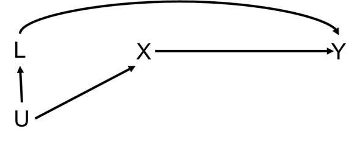
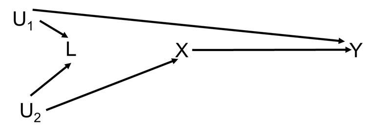

Directed acyclic graphs and confounding
Refresher
Notation: exposure \(X\), outcome \(Y\)
- Pathway
- Mediator:
- Backdoor pathway (first arrow goes wrong way from start point, other arrows can go in either direction): \(X \leftarrow L \rightarrow Y\)
- Collider
A pathway is closed if
- We adjust for a variable that’s not a collider on the pathway, e.g. in the DAG below adjusting for \(L\), indicated with the box, closes the path \(X \leftarrow L \rightarrow Y\)
Or in this mediator DAG, adjusting for the mediator closes the path \(X \rightarrow M \rightarrow Y\)
- There’s a collider on the pathway, i.e., in the collider DAG the path \(X \rightarrow \text{Collider} \leftarrow Y\) is closed (without adjusting for the collider)
Question 1
These questions were inspired by material given by Prof M. A. Hernán.
a)
What is the triangle definition of a confounder? Hint: it has three criteria.
A confounder is
b)
What is Pearl’s definition of confounding?
c)
For each of the following DAGs assess whether
- \(L\) is confounder under the triangle definition of a confounder (assess each of the 3 criteria)
- there is confounding of the \(X\)–\(Y\) relationship under Pearl’s definition of confounding
DAG A

DAG B

DAG C

DAG D

Question 2
The following DAG describes a model between an exposure (\(E\)), a disease outcome (\(D\)), and three other variables (\(A\), \(B\), and \(C\)).

a)
List all the (both open and closed) backdoor pathways between \(E\) and \(D\).
b)
With respect to \(A\) and \(B\) how would you describe \(C\)?
c)
If we fitted a regression model using \(B\) as the outcome regressed on covariates \(A\) and \(C\), what could be the problem?
d)
Suppose we want to estimate the effect of \(E\) on \(D\), is there one best model to estimate this association? Write down the best model/s
e)
Verify your answers using the dagitty/ggdag packages in R (or the dagitty web app here).
Which paths remain open when conditioning on \(C\).
What do we need to adjust for to estimate the effect of \(E\) on \(D\)?